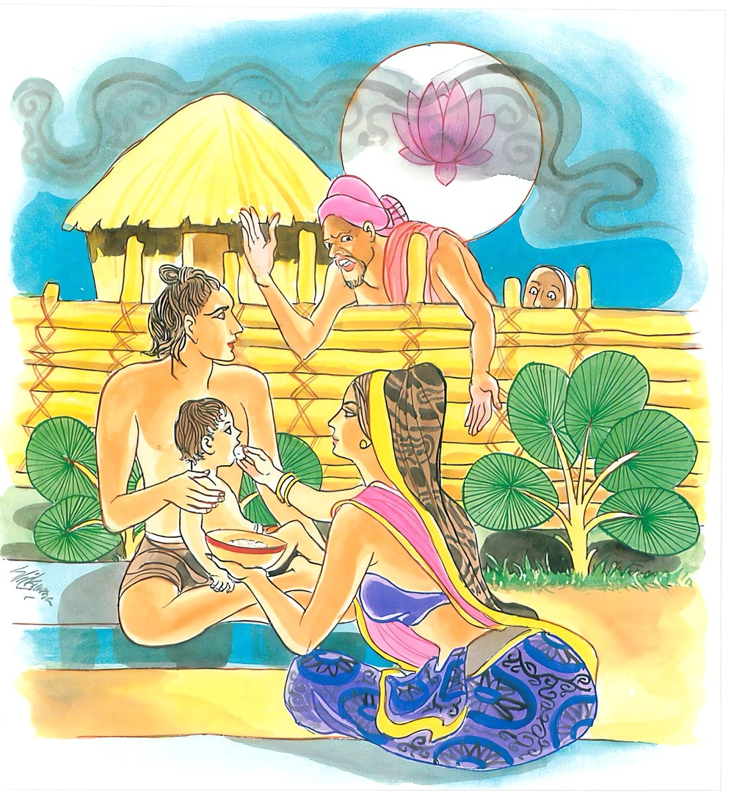

18-11 උජ්ඣානසඤ්ඤී ස්ථවිර
මෙම කතාව ධම්මපද අටුවාවෙන් ද කියවන්න.
පරවජ්ජානුපස්සිස්ස නිච්චං උජ්ඣානසඤ්ඤිනො
ආසවා තස්ස වඩ්ඪන්ති ආරා සො ආසවක්ඛයා.
අනුන්ගේ වරද දක්නා සුලු වූ, සතතයෙන් අනුන් උදහන සුලු වූ (අනුන්හට දොස් කියන සුලු වූ) ඒ මහණහට ආස්රවයෝ වඩනාහ. හෙ තෙම රහත් බැවින් දුරු යි.

උජ්ඣානසඤ්ඤී ස්ථවිර තෙමේ “මූ මෙසේ කන්නේය, මූ මෙසේ පොර වන්නේ ය, මූ මෙසේ හිඳින්නේ ය, මූ මෙසේ කියන්නේ ය, බොන්න් ය, නිදන්නේ ය, යන්නේ ය”යි භික්ෂූන් වහන්සේලාගේ සිදුරු සොයමින් දවරෑ දෙක් හි අතැන මෙතැන තැන තැන ඇවිදින්නේ ය. එකල්හි භික්ෂූන් වහන්සේලා බුදුරජුන් වෙත ගොස් “ස්වාමීනි! අසුවල් ස්ථවිර, භික්ෂූන්ගේ සිදුරු සොයමින් අතැන මෙතැන ඇවිදින්නේ ය”යි දන්වා සිටියහ. “මහණෙනි! යමෙක් යමකු නිසි මග යවන්නට වත පිළිවෙතෙහි යොදන්නට සිතා අවවාද විසින් වත් හිස සිට මෙසේ කියා නම්, හේ ගරහනුයේ නො වේ, නො ගරහනුයේ ය, යමෙක් අනුහු හෙලා දකිනු කැමැති ව අනුන්ගේ සිදුරු සොය සොයා මෙසේ කියමින් හැසිරේ නම් ඔහුට ධ්යානාභිඥා අතුරෙහි කිසි විශේෂයක් නො ලැබෙන්නේ ය, හුදෙක් ඔහුට ආස්රවයෝ ම වැඩෙති”යි වදාරා මේ ධර්මදේශනාව කළ සේක.
පරවජ්ජානුපස්සීස්ස නිච්චං උජ්ඣානසඤ්ඤිනො,
ආසවා තස්ස වඩ්ඪන්ති ආරා සො ආසවක්ඛයාති.
අනුනේගේ වරද දක්නා සුලු නිතර අන්හට දොස් කියන සුලු ඔහුට ආස්රවයෝ වැඩෙන්නාහ. හෙතෙමේ රත් බැවින් දුරුයි.
පරවජ්ජානුපස්සීස්ස = අනුන්ගේ වරද දක්නා සුලු වූ
නිච්චං උජ්ඣාකදඤ්ඤිනො = නිතර අනුන්ගේ දොස් කියන සුලු වූ
ආසවා තස්ස වඩ්ඪන්ති = ඔහුට ආස්රවයෝ වැඩෙත්.
නිතර අනුන්ගේ සිදුරු සොයමින් මෙසේ හැන්ද යුතු ය, මෙසේ පෙරවිය යුතු ය, මෙසේ කෑ යුතු ය, මෙසේ බිණිය යුතු ය, යනාදීන් අනුනට දොස් පරොස් බස් කියන්නහුට ආස්රවයෝ වැඩෙත්.
කම - භව - දිට්ඨි - අවිජ්ජා යන මොවුහු ආස්රවයෝ ය. මෙ කියූ ආස්රවයෝ යට කී ලෙසින් දොස් පරොස් කියන ගිහියනට හා පැවිද්දනට දවරෑ දෙක්හි නිතර වැඩෙන්නාහ. [1]
ආරා සො ආසවක්ඛයා = හෙතෙමේ රහත් බැවින් දුරුය.
ඒ පුද්ගලයාහට ධ්යානාදිගුණවිශේෂයකුත් නො ලැබෙන කල්හි රහත්බව ලැබෙනු යි කිසිලෙසකින් නො කියහැකි ය. [2]
ධර්මදේශනාවගේ අවසානයෙහි බොහෝ දෙන සෝවන් ඵලාදියට පැමිණියාහු ය.
උජ්ඣානසඤ්ඤිස්ථවිර වස්තුව නිමි.